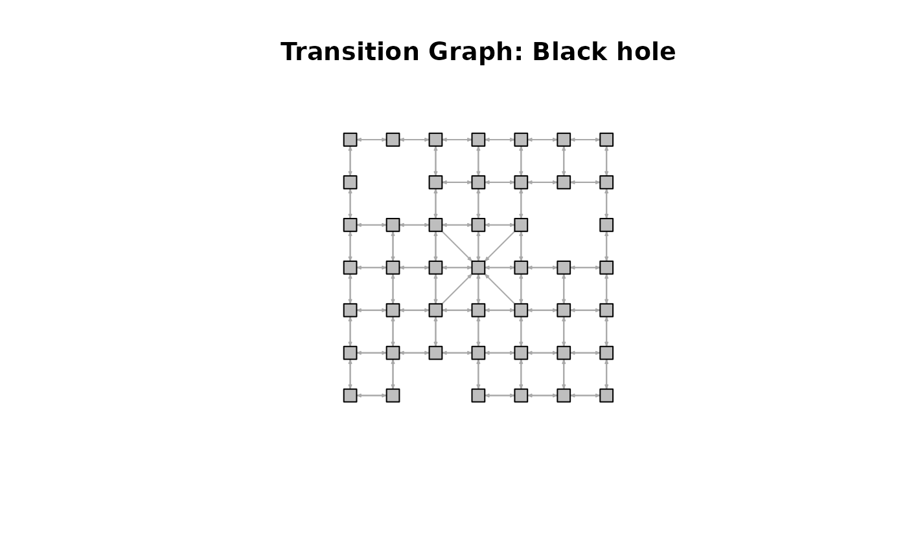
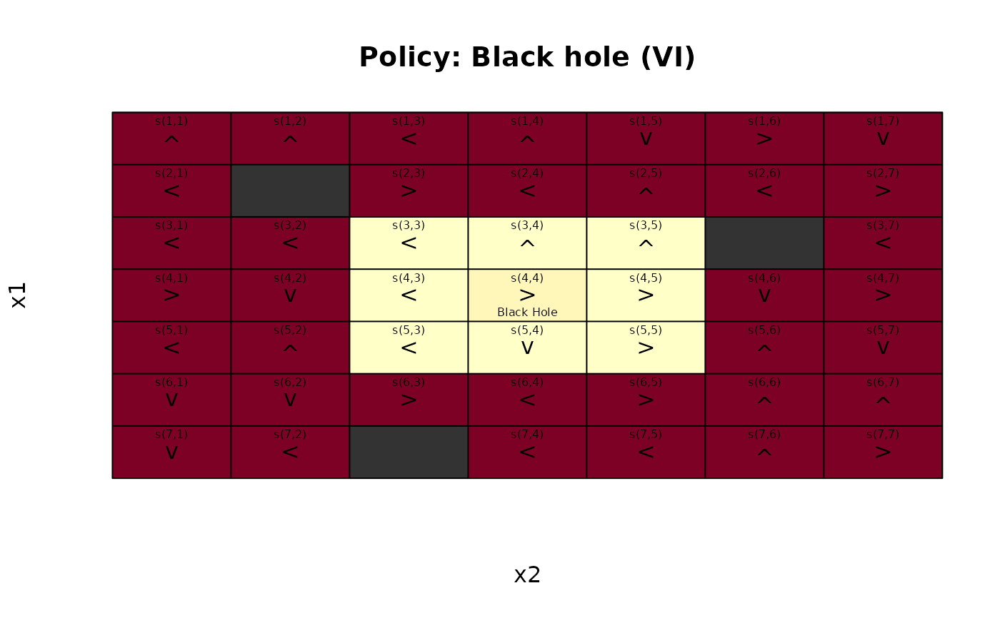
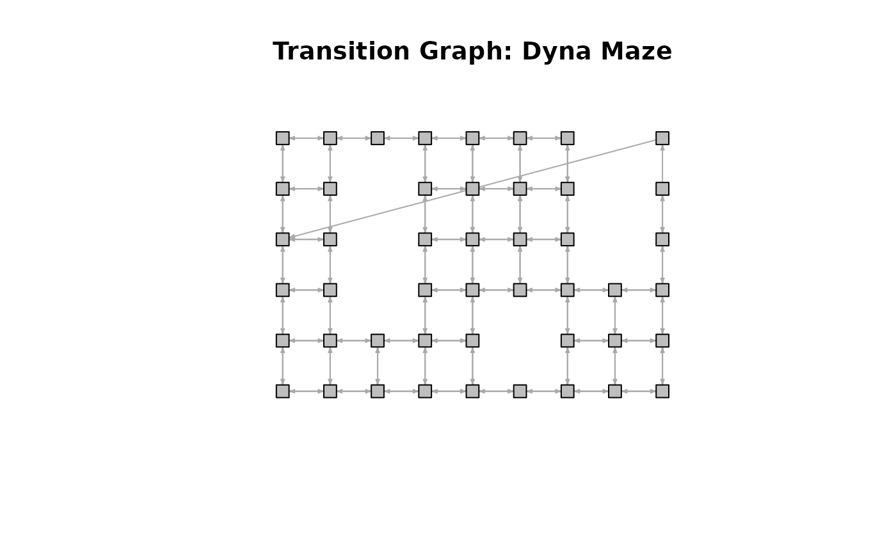
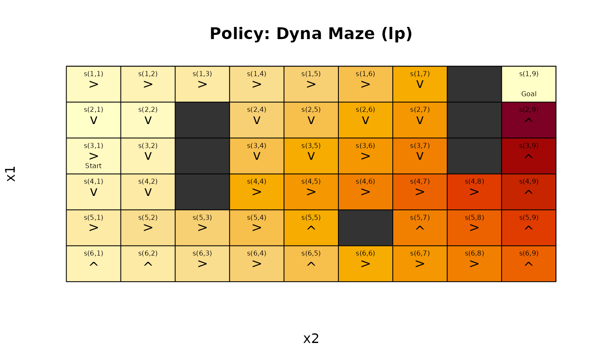
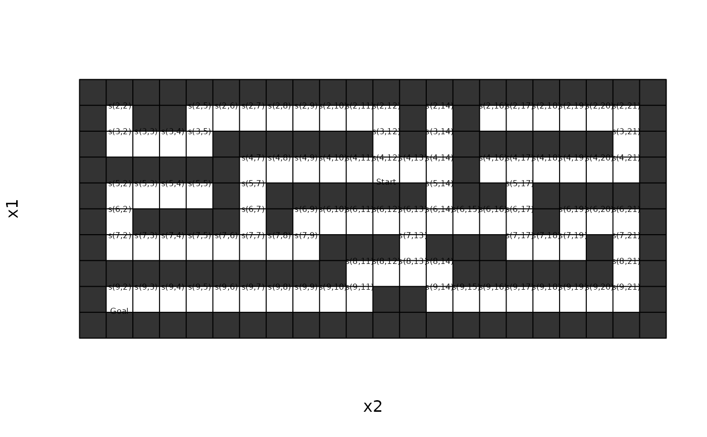
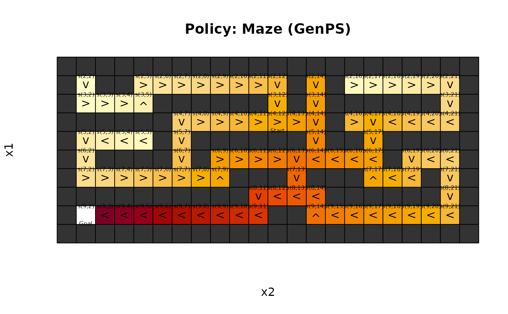
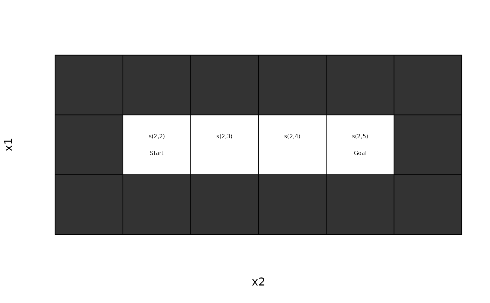
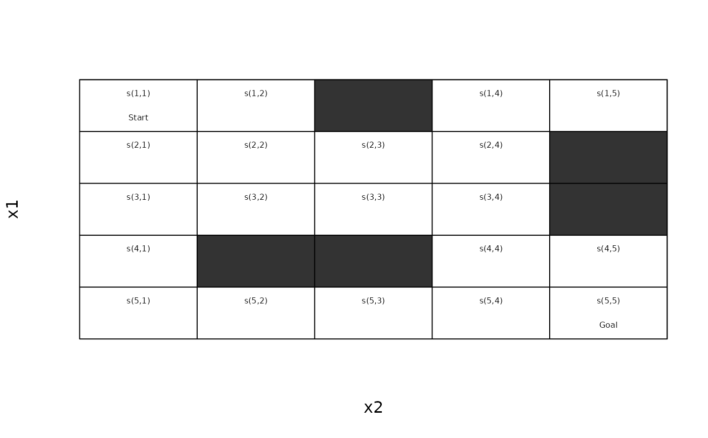

Helper functions for gridworld MDPs to convert between state names and gridworld positions, and for visualizing policies.
Usage
gw_init(
dim,
actions = c("up", "right", "down", "left"),
start = NULL,
goal = NULL,
absorbing_states = NULL,
blocked_states = NULL,
state_labels = list()
)
gw_s2rc(s)
gw_rc2s(rc)
gw_matrix(model, epoch = 1L, what = "states")
gw_plot(
model,
epoch = 1L,
actions = "character",
states = TRUE,
index = FALSE,
labels = TRUE,
impossible_actions = FALSE,
main = NULL,
cex = 1,
offset = 0.5,
lines = TRUE,
contour = FALSE,
col = hcl.colors(100, "YlOrRd", rev = TRUE),
blocked_col = "gray20",
...
)
gw_plot_transition_graph(
x,
remove.loops = TRUE,
vertex.color = "gray",
vertex.shape = "square",
vertex.size = 10,
vertex.label = NA,
edge.arrow.size = 0.3,
margin = 0.2,
main = NULL,
...
)
gw_animate(model, method, n, zlim = NULL, continue = FALSE, ...)
gw_transition_model(model, action, start.state)
gw_transition_model_sparse(model, action, start.state)
gw_transition_model_named(model, action, start.state)
gw_transition_model_end_state(model, action, start.state, end.state)
gw_maze_MDP(
dim,
start,
goal,
walls = NULL,
actions = c("up", "right", "down", "left"),
goal_reward = 100,
step_cost = 1,
restart = FALSE,
discount = 1,
horizon = Inf,
info = NULL,
normalize = FALSE,
access = "model",
name = "A Maze"
)
gw_random_maze(
dim,
wall_prob = 0.2,
start = NULL,
goal = NULL,
normalize = FALSE
)
gw_read_maze(file, discount = 1, restart = FALSE, name = "Maze")
gw_path(model, start = NULL, goal = NULL, horizon = NULL)Arguments
- dim
vector of length two with the x and y extent of the gridworld.
- actions
how to show actions. Options are: simple
"character","unicode"arrows (needs to be supported by the used font),"label"of the action, and"none"to suppress showing the action.- start, goal
start and goal states. If
NULLthen the states specified in the model are used.- absorbing_states
a vector with state labels for absorbing states.
- blocked_states
a vector with state labels for unreachable states. These states will be excluded.
- state_labels
a list with labels for states. The element names need to be state names.
- s
a state label or a vector of labels.
- rc
a vector of length two with the row and column coordinate of a state in the gridworld matrix. A matrix with one state per row can be also supplied.
- model, x
a solved gridworld MDP.
- epoch
epoch for unconverged finite-horizon solutions.
- what
What should be returned in the matrix. Options are:
"states","index","labels","values","actions","absorbing", and"unreachable".- states
logical; show state names.
- index
logical; show the state indices.
- labels
logical; show state labels.
- impossible_actions
logical; show the value and the action for absorbing states.
- main
a main title for the plot. Defaults to the name of the problem.
- cex
expansion factor for the action.
- offset
move the state labels out of the way (in fractions of a character width).
- lines
logical; draw lines to separate states.
- contour
logical; add value function contours.
- col
a colors for the utility values.
- blocked_col
a color used for blocked states. Use
NAfor no color.- ...
further arguments are passed on to
igraph::plot.igraph().- remove.loops
logical; do not show transitions from a state back to itself.
- vertex.color, vertex.shape, vertex.size, vertex.label, edge.arrow.size
see
igraph::igraph.plottingfor details. Setvertex.label = NULLto show the state labels on the graph.- margin
a single number specifying the margin of the plot. Can be used if the graph does not fit inside the plotting area.
- method
an MDP solution method for
solve_MDP().- n
number of iterations to animate.
- zlim
limits for visualizing the state value.
- continue
logical; continue solving a solution.
- action, start.state, end.state
parameters for the transition function.
- walls
a vector with state labels for walls. Walls will become unreachable states.
- goal_reward
reward to transition to the goal state.
- step_cost
cost of each action that does not lead to the goal state.
- restart
logical; if
TRUEthen the problem automatically restarts when the agent reaches the goal state.- discount, horizon
MDP discount factor, and horizon.
- info
A list with additional information. Has to contain the gridworld dimensions as element
dimand can be created usinggw_init().- normalize
logical; should the description be normalized for faster access using
normalize_MDP().- access
string; create an MDP with
"model"or"sample"access.- name
a string to identify the MDP problem.
- wall_prob
probability to make a tile a wall.
- file
filename for a maze text file.
Value
gw_animate() returns the final solution invisibly.
gw_maze_MDP() returns an MDP object.
gw_path() returns a list with the elements "path",
"reward" and "solved".
Details
Gridworlds are implemented with state names s(row,col), where
row and col are locations in the matrix representing the gridworld.
The default actions are "up", "right", "down", and "left".
Creating a Gridworld
gw_init() initializes a new gridworld creating a matrix
of states with the given dimensions. Other action names
can be specified, but they must have the same effects in the same order
as above. Blocked states (walls) and absorbing state can be defined.
This information can be used to build a custom gridworld MDP. Note that
blocked states are removed from the model description using
remove_unreachable_states().
Converting Between State Names and Coordinates
gw_s2rc() and gw_rc2s help with converting from
state names to xy-coordinates and vice versa.
Inspecting Gridworlds
gw_matrix() returns different information
(state names, values, actions, etc.) as a matrix. Note that some gridworlds
have unreachable states removed. These states will be represented in the
matrix as NA.
gw_plot() plots a gridworld.
gw_plot_transition_graph() plots the transition graph
using the gridworld matrix as the layout.
gw_animate() applies algorithms from solve_MDP() iteration
by iteration and visualized the state utilities. This helps to understand
how the algorithms work.
Gridworld Transition Model
The transition model is available in several forms:
gw_transition_model()returns a dense vector for the action and start state.gw_transition_model_sparse()returns a sparse vector for the action and start state. Note: creating sparse vectors is very expensive and should only be used for sparse models with a large state space.gw_transition_model_named()returns only the non-zero probabilities as a named vector.gw_transition_model_end_state()returns a single value for a given action, start and end state. Note: Using this function is very slow since it results in excessive function calls.
Mazes
gw_maze_MDP() helps to easily define maze-like gridworld MDPs.
By default, the goal state is absorbing, but with restart = TRUE, the
agent restarts the problem at the start state every time it reaches the goal
and receives the reward. Note that this implies that the goal state itself
becomes unreachable.
gw_read_maze() reads a maze in text format from a file
and converts it into a gridworld MDP.
gw_path() checks if a solved gridworld has a policy that
leads from the start to the goal. Note this function currently samples only a single path which is
an issue with stochastic transitions!
See also
Other gridworld:
Cliff_walking,
DynaMaze,
Maze,
Windy_gridworld
Other visualization:
transition_graph()
Examples
# Defines states, actions and a transition model for a standard gridworld
gw <- gw_init(
dim = c(7, 7),
blocked_states = c("s(2,2)", "s(7,3)", "s(3,6)"),
absorbing_states = "s(4,4)",
state_labels = list("s(4,4)" = "Black Hole")
)
str(gw)
#> List of 7
#> $ states : chr [1:46] "s(1,1)" "s(2,1)" "s(3,1)" "s(4,1)" ...
#> $ actions : chr [1:4] "up" "right" "down" "left"
#> $ transition_model:function (model, action, start.state)
#> $ reward :'data.frame': 1 obs. of 4 variables:
#> ..$ action : logi NA
#> ..$ start.state: logi NA
#> ..$ end.state : logi NA
#> ..$ value : num 0
#> $ start : NULL
#> $ info :List of 6
#> ..$ gridworld : logi TRUE
#> ..$ dim : num [1:2] 7 7
#> ..$ start : NULL
#> ..$ goal : NULL
#> ..$ state_labels :List of 1
#> .. ..$ s(4,4): chr "Black Hole"
#> ..$ absorbing_states: chr "s(4,4)"
#> $ absorbing_states: chr "s(4,4)"
# display the state labels in the gridworld (states not represented in the
# model are shown as NA)
gw_matrix(gw)
#> [,1] [,2] [,3] [,4] [,5] [,6] [,7]
#> [1,] "s(1,1)" "s(1,2)" "s(1,3)" "s(1,4)" "s(1,5)" "s(1,6)" "s(1,7)"
#> [2,] "s(2,1)" NA "s(2,3)" "s(2,4)" "s(2,5)" "s(2,6)" "s(2,7)"
#> [3,] "s(3,1)" "s(3,2)" "s(3,3)" "s(3,4)" "s(3,5)" NA "s(3,7)"
#> [4,] "s(4,1)" "s(4,2)" "s(4,3)" "s(4,4)" "s(4,5)" "s(4,6)" "s(4,7)"
#> [5,] "s(5,1)" "s(5,2)" "s(5,3)" "s(5,4)" "s(5,5)" "s(5,6)" "s(5,7)"
#> [6,] "s(6,1)" "s(6,2)" "s(6,3)" "s(6,4)" "s(6,5)" "s(6,6)" "s(6,7)"
#> [7,] "s(7,1)" "s(7,2)" NA "s(7,4)" "s(7,5)" "s(7,6)" "s(7,7)"
gw_matrix(gw, what = "label")
#> [,1] [,2] [,3] [,4] [,5] [,6] [,7]
#> [1,] "" "" "" "" "" "" ""
#> [2,] "" "X" "" "" "" "" ""
#> [3,] "" "" "" "" "" "X" ""
#> [4,] "" "" "" "Black Hole" "" "" ""
#> [5,] "" "" "" "" "" "" ""
#> [6,] "" "" "" "" "" "" ""
#> [7,] "" "" "X" "" "" "" ""
gw_matrix(gw, what = "absorbing")
#> [,1] [,2] [,3] [,4] [,5] [,6] [,7]
#> [1,] FALSE FALSE FALSE FALSE FALSE FALSE FALSE
#> [2,] FALSE NA FALSE FALSE FALSE FALSE FALSE
#> [3,] FALSE FALSE FALSE FALSE FALSE NA FALSE
#> [4,] FALSE FALSE FALSE TRUE FALSE FALSE FALSE
#> [5,] FALSE FALSE FALSE FALSE FALSE FALSE FALSE
#> [6,] FALSE FALSE FALSE FALSE FALSE FALSE FALSE
#> [7,] FALSE FALSE NA FALSE FALSE FALSE FALSE
gw_matrix(gw, what = "unreachable") # these are actually missing from the model
#> [,1] [,2] [,3] [,4] [,5] [,6] [,7]
#> [1,] FALSE FALSE FALSE FALSE FALSE FALSE FALSE
#> [2,] FALSE TRUE FALSE FALSE FALSE FALSE FALSE
#> [3,] FALSE FALSE FALSE FALSE FALSE TRUE FALSE
#> [4,] FALSE FALSE FALSE FALSE FALSE FALSE FALSE
#> [5,] FALSE FALSE FALSE FALSE FALSE FALSE FALSE
#> [6,] FALSE FALSE FALSE FALSE FALSE FALSE FALSE
#> [7,] FALSE FALSE TRUE FALSE FALSE FALSE FALSE
# a transition function for regular moves in the gridworld is provided
gw_transition_model(gw, "right", "s(1,1)")
#> s(1,1) s(2,1) s(3,1) s(4,1) s(5,1) s(6,1) s(7,1) s(1,2) s(3,2) s(4,2) s(5,2)
#> 0 0 0 0 0 0 0 1 0 0 0
#> s(6,2) s(7,2) s(1,3) s(2,3) s(3,3) s(4,3) s(5,3) s(6,3) s(1,4) s(2,4) s(3,4)
#> 0 0 0 0 0 0 0 0 0 0 0
#> s(4,4) s(5,4) s(6,4) s(7,4) s(1,5) s(2,5) s(3,5) s(4,5) s(5,5) s(6,5) s(7,5)
#> 0 0 0 0 0 0 0 0 0 0 0
#> s(1,6) s(2,6) s(4,6) s(5,6) s(6,6) s(7,6) s(1,7) s(2,7) s(3,7) s(4,7) s(5,7)
#> 0 0 0 0 0 0 0 0 0 0 0
#> s(6,7) s(7,7)
#> 0 0
gw_transition_model_end_state(gw, "right", "s(1,1)", "s(1,2)")
#> [1] 1
# convert between state names and row/column indices
gw_s2rc("s(1,1)")
#> [1] 1 1
gw_rc2s(c(1, 1))
#> [1] "s(1,1)"
# The information in gw can be used to build a custom MDP.
# We modify the standard transition function so there is a 50% chance that
# you will get sucked into the black hole from the adjacent squares.
trans_black_hole <- function(model,
action,
start.state,
end.state) {
# states around the black hole
if (start.state %in% c(
"s(3,3)", "s(3,4)", "s(3,5)", "s(4,3)", "s(4,5)",
"s(5,3)", "s(5,4)", "s(5,5)"
)) {
if (end.state == "s(4,4)") {
return(.5 + gw_transition_model_end_state(model, action, start.state,
end.state) * .5)
} else {
return(gw_transition_model_end_state(model, action, start.state,
end.state) * .5)
}
}
# use the standard gridworld movement
gw_transition_model_end_state(model, action, start.state, end.state)
}
black_hole <- MDP(
states = gw$states,
actions = gw$actions,
transition_model = trans_black_hole,
reward = rbind(R_( value = +1),
R_(end.state = "s(4,4)", value = -100),
R_(start.state = "s(4,4)", value = 0)
),
info = gw$info,
name = "Black hole"
)
black_hole
#> MDPModel, MDP - Black hole
#> Discount factor: 0.9
#> Horizon: Inf epochs
#> Size: 4 actions / 46 states
#> Storage: transition prob as function / reward as data.frame. Total size: 14.2 Kb
#> Start: uniform
#> Model list components: ‘name’, ‘discount’, ‘horizon’, ‘states’,
#> ‘actions’, ‘start’, ‘transition_model’, ‘reward’, ‘info’
black_hole <- normalize_MDP(black_hole)
gw_plot_transition_graph(black_hole)

# solve the problem
sol <- solve_MDP(black_hole, error = 1)
gw_matrix(sol, what = "values")
#> [,1] [,2] [,3] [,4] [,5] [,6] [,7]
#> [1,] 9.015229 9.015229 9.015229 9.015229 9.015229 9.015229 9.015229
#> [2,] 9.015229 NA 9.015229 9.015229 9.015229 9.015229 9.015229
#> [3,] 9.015229 9.015229 -76.610906 -76.610906 -76.610906 NA 9.015229
#> [4,] 9.015229 9.015229 -76.610906 -69.048244 -76.610906 9.015229 9.015229
#> [5,] 9.015229 9.015229 -76.610906 -76.610906 -76.610906 9.015229 9.015229
#> [6,] 9.015229 9.015229 9.015229 9.015229 9.015229 9.015229 9.015229
#> [7,] 9.015229 9.015229 NA 9.015229 9.015229 9.015229 9.015229
gw_plot(sol)

# the optimal policy is to fly around, but avoid the black hole.
# Build a Maze: The Dyna Maze from Chapter 8 in the RL book
DynaMaze <- gw_maze_MDP(
dim = c(6, 9),
start = "s(3,1)",
goal = "s(1,9)",
walls = c(
"s(2,3)", "s(3,3)", "s(4,3)",
"s(5,6)",
"s(1,8)", "s(2,8)", "s(3,8)"
),
restart = TRUE,
discount = 0.95,
name = "Dyna Maze",
)
DynaMaze
#> MDPModel, MDP - Dyna Maze
#> Discount factor: 0.95
#> Horizon: Inf epochs
#> Size: 4 actions / 47 states
#> Storage: transition prob as function / reward as data.frame. Total size: 44.7 Kb
#> Start: s(3,1)
#> Model list components: ‘name’, ‘discount’, ‘horizon’, ‘states’,
#> ‘actions’, ‘start’, ‘transition_model’, ‘reward’, ‘info’,
#> ‘absorbing_states’
gw_matrix(DynaMaze)
#> [,1] [,2] [,3] [,4] [,5] [,6] [,7] [,8]
#> [1,] "s(1,1)" "s(1,2)" "s(1,3)" "s(1,4)" "s(1,5)" "s(1,6)" "s(1,7)" NA
#> [2,] "s(2,1)" "s(2,2)" NA "s(2,4)" "s(2,5)" "s(2,6)" "s(2,7)" NA
#> [3,] "s(3,1)" "s(3,2)" NA "s(3,4)" "s(3,5)" "s(3,6)" "s(3,7)" NA
#> [4,] "s(4,1)" "s(4,2)" NA "s(4,4)" "s(4,5)" "s(4,6)" "s(4,7)" "s(4,8)"
#> [5,] "s(5,1)" "s(5,2)" "s(5,3)" "s(5,4)" "s(5,5)" NA "s(5,7)" "s(5,8)"
#> [6,] "s(6,1)" "s(6,2)" "s(6,3)" "s(6,4)" "s(6,5)" "s(6,6)" "s(6,7)" "s(6,8)"
#> [,9]
#> [1,] "s(1,9)"
#> [2,] "s(2,9)"
#> [3,] "s(3,9)"
#> [4,] "s(4,9)"
#> [5,] "s(5,9)"
#> [6,] "s(6,9)"
gw_matrix(DynaMaze, what = "labels")
#> [,1] [,2] [,3] [,4] [,5] [,6] [,7] [,8] [,9]
#> [1,] "" "" "" "" "" "" "" "X" "Goal"
#> [2,] "" "" "X" "" "" "" "" "X" ""
#> [3,] "Start" "" "X" "" "" "" "" "X" ""
#> [4,] "" "" "X" "" "" "" "" "" ""
#> [5,] "" "" "" "" "" "X" "" "" ""
#> [6,] "" "" "" "" "" "" "" "" ""
gw_plot_transition_graph(DynaMaze)

# Note that the problems resets if the goal state would be reached.
sol <- solve_MDP(DynaMaze, method = "LP:LP")
gw_matrix(sol, what = "values")
#> [,1] [,2] [,3] [,4] [,5] [,6] [,7] [,8]
#> [1,] 76.55494 81.63678 86.98608 92.61693 98.54414 104.7833 111.3508 NA
#> [2,] 71.72719 76.55494 NA 98.54414 104.78330 111.3508 118.2640 NA
#> [3,] 76.55494 81.63678 NA 104.78330 111.35084 118.2640 125.5411 NA
#> [4,] 81.63678 86.98608 NA 111.35084 118.26405 125.5411 133.2012 141.2644
#> [5,] 86.98608 92.61693 98.54414 104.78330 111.35084 NA 125.5411 133.2012
#> [6,] 81.63678 86.98608 92.61693 98.54414 104.78330 111.3508 118.2640 125.5411
#> [,9]
#> [1,] 72.72719
#> [2,] 168.09083
#> [3,] 158.68629
#> [4,] 149.75198
#> [5,] 141.26438
#> [6,] 133.20116
gw_matrix(sol, what = "actions")
#> [,1] [,2] [,3] [,4] [,5] [,6] [,7] [,8] [,9]
#> [1,] "right" "right" "right" "right" "right" "right" "down" NA "up"
#> [2,] "down" "down" NA "down" "down" "down" "down" NA "up"
#> [3,] "right" "down" NA "down" "down" "right" "down" NA "up"
#> [4,] "down" "down" NA "right" "right" "right" "right" "right" "up"
#> [5,] "right" "right" "right" "right" "up" NA "up" "right" "up"
#> [6,] "up" "up" "right" "right" "up" "right" "right" "right" "up"
gw_plot(sol, states = TRUE)

# check if we found a solution
gw_path(sol)
#> $path
#> episode time s a r s_prime
#> 1 1 0 s(3,1) right -1 s(3,2)
#> 2 1 1 s(3,2) down -1 s(4,2)
#> 3 1 2 s(4,2) down -1 s(5,2)
#> 4 1 3 s(5,2) right -1 s(5,3)
#> 5 1 4 s(5,3) right -1 s(5,4)
#> 6 1 5 s(5,4) right -1 s(5,5)
#> 7 1 6 s(5,5) up -1 s(4,5)
#> 8 1 7 s(4,5) right -1 s(4,6)
#> 9 1 8 s(4,6) right -1 s(4,7)
#> 10 1 9 s(4,7) right -1 s(4,8)
#> 11 1 10 s(4,8) right -1 s(4,9)
#> 12 1 11 s(4,9) up -1 s(3,9)
#> 13 1 12 s(3,9) up -1 s(2,9)
#> 14 1 13 s(2,9) up 99 s(1,9)
#>
#> $reward
#> [1] 41.08771
#>
#> $solved
#> [1] TRUE
#>
# Read a maze from a text file
# (X are walls, S is the start and G is the goal)
# some examples are installed with the package
maze_dir <- system.file("mazes", package = "markovDP")
dir(maze_dir)
#> [1] "L_maze.txt" "empty_2_maze.txt" "empty_maze.txt" "large_maze.txt"
#> [5] "loops_maze.txt" "medium_maze.txt" "open_maze.txt" "small_maze.txt"
#> [9] "wall_maze.txt"
file.show(file.path(maze_dir, "small_maze.txt"))
maze <- gw_read_maze(file.path(maze_dir, "small_maze.txt"))
maze
#> MDPModel, MDP - Maze
#> Discount factor: 1
#> Horizon: Inf epochs
#> Size: 4 actions / 94 states
#> Storage: transition prob as function / reward as data.frame. Total size: 73.9 Kb
#> Start: s(4,12)
#> Model list components: ‘name’, ‘discount’, ‘horizon’, ‘states’,
#> ‘actions’, ‘start’, ‘transition_model’, ‘reward’, ‘info’,
#> ‘absorbing_states’
gw_matrix(maze, what = "label")
#> [,1] [,2] [,3] [,4] [,5] [,6] [,7] [,8] [,9] [,10] [,11] [,12] [,13]
#> [1,] "X" "X" "X" "X" "X" "X" "X" "X" "X" "X" "X" "X" "X"
#> [2,] "X" "" "X" "X" "" "" "" "" "" "" "" "" "X"
#> [3,] "X" "" "" "" "" "X" "X" "X" "X" "X" "X" "" "X"
#> [4,] "X" "X" "X" "X" "X" "X" "" "" "" "" "" "Start" ""
#> [5,] "X" "" "" "" "" "X" "" "X" "X" "X" "X" "X" "X"
#> [6,] "X" "" "X" "X" "X" "X" "" "X" "" "" "" "" ""
#> [7,] "X" "" "" "" "" "" "" "" "" "X" "X" "X" ""
#> [8,] "X" "X" "X" "X" "X" "X" "X" "X" "X" "X" "" "" ""
#> [9,] "X" "Goal" "" "" "" "" "" "" "" "" "" "X" "X"
#> [10,] "X" "X" "X" "X" "X" "X" "X" "X" "X" "X" "X" "X" "X"
#> [,14] [,15] [,16] [,17] [,18] [,19] [,20] [,21] [,22]
#> [1,] "X" "X" "X" "X" "X" "X" "X" "X" "X"
#> [2,] "" "X" "" "" "" "" "" "" "X"
#> [3,] "" "X" "X" "X" "X" "X" "X" "" "X"
#> [4,] "" "X" "" "" "" "" "" "" "X"
#> [5,] "" "X" "X" "" "X" "X" "X" "X" "X"
#> [6,] "" "" "" "" "X" "" "" "" "X"
#> [7,] "X" "X" "X" "" "" "" "X" "" "X"
#> [8,] "" "X" "X" "X" "X" "X" "X" "" "X"
#> [9,] "" "" "" "" "" "" "" "" "X"
#> [10,] "X" "X" "X" "X" "X" "X" "X" "X" "X"
gw_plot(maze)

# Prioritized sweeping is especially effective for larger mazes.
sol <- solve_MDP(maze, method = "DP:GenPS")
sol
#> MDPModel, MDP - Maze
#> Discount factor: 1
#> Horizon: Inf epochs
#> Size: 4 actions / 94 states
#> Storage: transition prob as matrix / reward as matrix. Total size: 680.6 Kb
#> Start: s(4,12)
#> Model list components: ‘name’, ‘discount’, ‘horizon’, ‘states’,
#> ‘actions’, ‘start’, ‘transition_model’, ‘reward’, ‘info’,
#> ‘absorbing_states’, ‘solution’
#>
#> Solved:
#> Method: ‘GenPS’
#> Solution converged: TRUE
#> Solution list components: ‘method’, ‘policy’, ‘Q’, ‘H’, ‘converged’,
#> ‘state_updates’
gw_plot(sol)

gw_path(sol, horizon = 1000)
#> $path
#> episode time s a r s_prime
#> 1 1 0 s(4,12) right -1 s(4,13)
#> 2 1 1 s(4,13) right -1 s(4,14)
#> 3 1 2 s(4,14) down -1 s(5,14)
#> 4 1 3 s(5,14) down -1 s(6,14)
#> 5 1 4 s(6,14) left -1 s(6,13)
#> 6 1 5 s(6,13) down -1 s(7,13)
#> 7 1 6 s(7,13) down -1 s(8,13)
#> 8 1 7 s(8,13) left -1 s(8,12)
#> 9 1 8 s(8,12) left -1 s(8,11)
#> 10 1 9 s(8,11) down -1 s(9,11)
#> 11 1 10 s(9,11) left -1 s(9,10)
#> 12 1 11 s(9,10) left -1 s(9,9)
#> 13 1 12 s(9,9) left -1 s(9,8)
#> 14 1 13 s(9,8) left -1 s(9,7)
#> 15 1 14 s(9,7) left -1 s(9,6)
#> 16 1 15 s(9,6) left -1 s(9,5)
#> 17 1 16 s(9,5) left -1 s(9,4)
#> 18 1 17 s(9,4) left -1 s(9,3)
#> 19 1 18 s(9,3) left 99 s(9,2)
#>
#> $reward
#> [1] 81
#>
#> $solved
#> [1] TRUE
#>
# A maze can also be created directly from a character vector
maze <- gw_read_maze(
textConnection(c("XXXXXX",
"XS GX",
"XXXXXX")))
gw_plot(maze)

# Create a small random maze
rand_maze <- gw_random_maze(dim = c(5, 5))
gw_plot(rand_maze)
